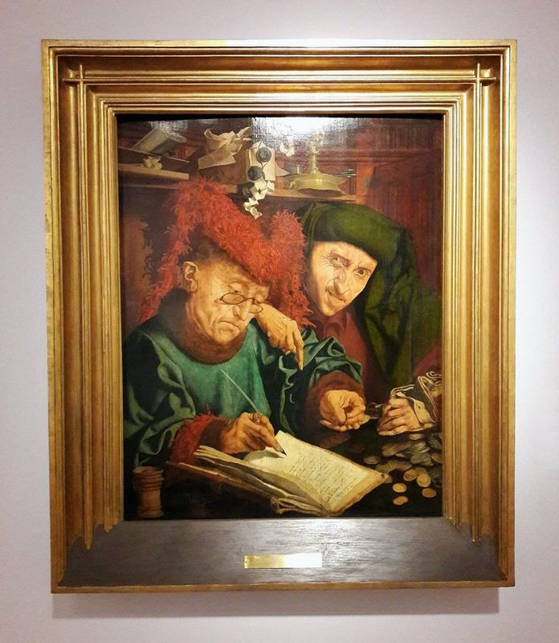
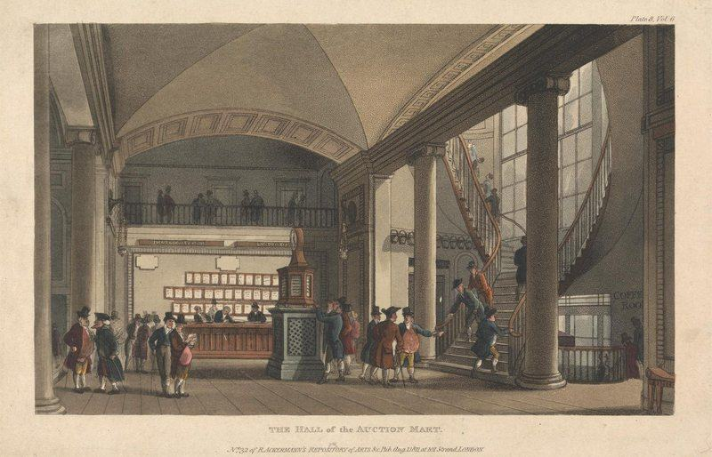
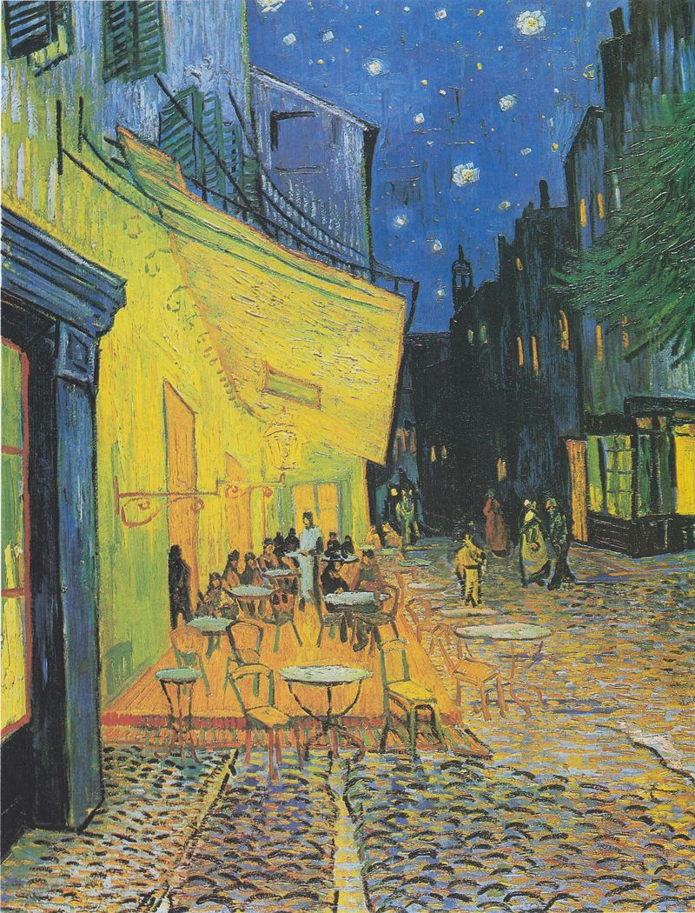
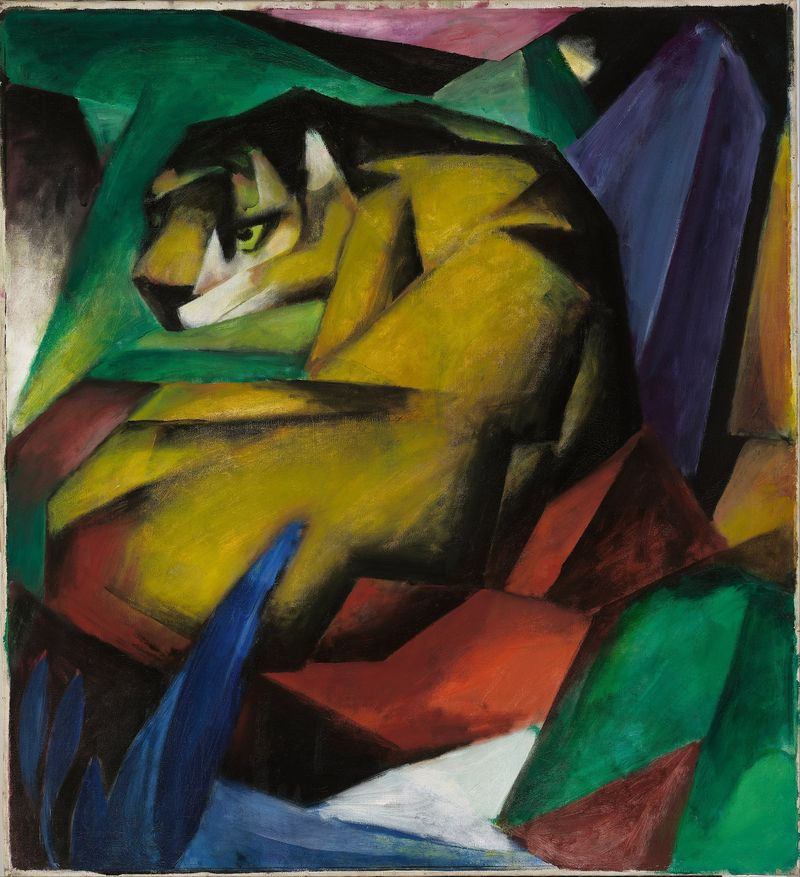
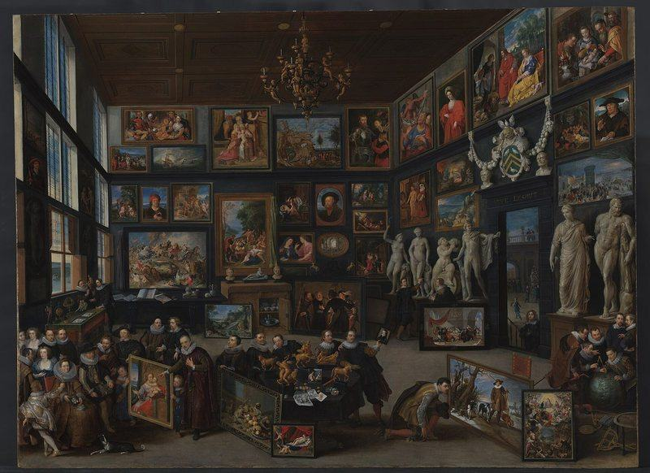
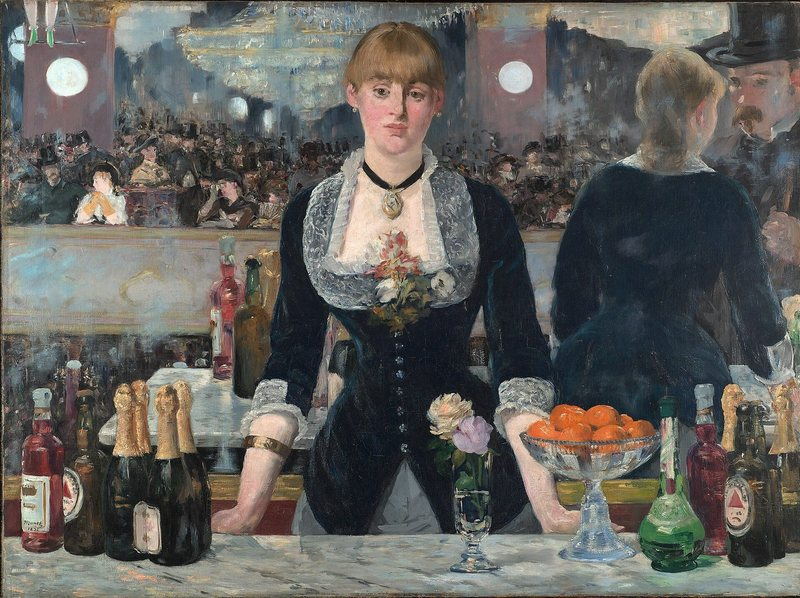

RSAS / Insights
Insights
Notes on the art market, written for collectors and clients rather than the trade.

Condition Reports: What They Cover and When You Need One
A condition report records the physical state of a work of art. It can reveal problems a photograph will never show, and it is one of the simplest ways to protect yourself before you buy.
Johannes Vermeer, Girl with a Pearl Earring, about 1665, oil on canvas. Public domain, via Mauritshuis, The Hague and Wikimedia Commons.
All articles
Insights for Collectors
Short, practical pieces on how the art market works: buying, selling, provenance, prices, care and what to ask. Each has a picture chosen to match.
Behavioural Biases When Buying Art: Anchoring, the Winner's Curse and More
Buying art is not only a financial decision. It is personal, emotional and often social, and that is part of its pleasure. It also means buyers and sellers are prone to predictable mistakes. Economists have studied these biases in art markets in some detail, and knowing about them is one of the simplest ways to make better decisions.
Read the articlePacking and Crating: How Works of Art Are Protected in Transit
Works of art are most at risk when they move. Vibration, shock, sudden changes in temperature and humidity, and handling mistakes cause a large share of the damage conservators see. Professional packing reduces those risks considerably, and knowing what good packing looks like helps owners choose the right service.
Read the article
When a Purchase Goes Wrong: Mediation, Arbitration and the Courts
Most art transactions go smoothly. When they do not, the dispute may concern authenticity, ownership, condition, payment or the terms of a consignment. Knowing the routes available, and their costs, helps buyers and sellers choose the right one and act in time.
Read the article
Online Timed Auctions: How They Work and How to Bid Well
Online-only timed auctions now account for a large share of auction lots, particularly prints, editions, photographs and works at accessible price levels. They are convenient and open to anyone with an internet connection. They also work differently from live sales, and bidders who understand the mechanics avoid the most common mistakes.
Read the article
A Short History of the Art Market, and Why It Still Matters
Many features of today's art market, from auction estimates to gallery representation, have roots going back centuries. A little history explains why the market works as it does, and why some of its habits are so hard to change.
Read the articleWomen Artists and the Market: Re-evaluation and What It Means for Buyers
In November 2025, Frida Kahlo's El sueño (La cama) sold at Sotheby's in New York for $54.7 million, overtaking the $44.4 million paid in 2014 for Georgia O'Keeffe's Jimson Weed/White Flower No. 1 as the highest auction price for a work by a woman. The record is one sign of a wider re-evaluation of women artists by museums, scholars and the market.
Read the articleWhen Museums Sell: Deaccessioning and Buying Ex-Museum Works
Museums do occasionally sell works from their collections, a process known as deaccessioning. When they do, the sale can attract strong interest and, sometimes, strong criticism. For buyers, an ex-museum work can offer excellent provenance, but it may also bring questions about ethics, export and reputation.
Read the articleWhen a Gallery Closes: Protecting Yourself as a Buyer
Galleries are small businesses with high fixed costs: rent, staff, fairs, shipping and the expense of building artists' careers. Many operate on thin margins, and closures are a regular feature of the art world. For buyers, a gallery's failure can leave payments unrecovered, works undelivered and paperwork incomplete. A few precautions reduce the risk considerably.
Read the article
The Art Fair Calendar: Which Fairs Matter, When and Why
The international art market now runs to a calendar of fairs that stretches across almost every month and continent. No collector can attend them all, and few should try. Knowing which fairs matter for which kinds of art helps you plan visits, set budgets and avoid the fatigue that leads to poor decisions.
Read the articleThe Gulf Art Scene: Museums, Fairs and What It Means for Collectors
In little more than a decade, the Gulf states have become a significant presence in the international art world. New museums have opened, the major fair brands have arrived, and regional collectors and institutions are active buyers. For collectors elsewhere, this matters both as a market to watch and as a destination to buy.
Read the articleContemporary African Art: Fairs, Galleries and Buying With Care
Over the past fifteen years, contemporary art from Africa and its diaspora has moved from the edges of the international market to its centre. Museums, fairs and collectors around the world now pay close attention. Rapid growth has also brought speculation, and buyers who take a long view are better placed than those chasing short-term demand.
Read the articleLatin American Art: How the Market Developed and How to Approach It
In November 2025, Frida Kahlo's 1940 painting El sueño (La cama) sold at Sotheby's in New York for $54.7 million, the highest price ever paid at auction for a work by a woman artist. The sale reflected decades of growth in the market for Latin American art, which now attracts collectors and museums worldwide.
Read the articleBuying Art in Asia: Hong Kong, Seoul and Tokyo for UK Collectors
Asia is now central to the international art market. Hong Kong hosts major auctions and one of the world's leading fairs, Seoul has become a significant stop in the calendar, and Japan's market is growing more international. For UK collectors, buying in Asia brings opportunities, along with practical points on tax, shipping and due diligence.
Read the article
Buying Conceptual and Installation Art: When the Work Is a Set of Instructions
Some of the most important art of the past sixty years cannot simply be hung on a wall. A wall drawing may be made by assistants following the artist's instructions. A light sculpture may use tubes that are replaced when they fail. A pile of sweets may be replenished by the owner. In each case, what the buyer acquires is not only an object, but the right to make, show or maintain the work as the artist intended.
Read the articleTokenised Artworks After the NFT Boom: What You Actually Own
The market for non-fungible tokens, or NFTs, rose and fell dramatically in a few years. Serious artists still make and sell tokenised works, and some museums collect them. Before buying, however, it is essential to understand exactly what the token gives you, and what it does not.
Read the article
Studio Ceramics and Contemporary Craft: A Collector's Introduction
Studio ceramics and contemporary craft have moved from the edges of the art market towards its centre. Museums collect them, major artists work in clay, glass and textile, and prices for leading makers have risen. For many collectors the field still offers outstanding work at accessible prices, provided buyers understand how it differs from painting and sculpture.
Read the article
Collecting Twentieth-Century Design: Originals, Reissues and Condition
Furniture, lighting and objects by the great designers of the twentieth century are collected as seriously as paintings. Unlike a painting, however, a famous chair may still be in production today. Knowing the difference between an early original, a licensed reissue and an unauthorised copy is the starting point for any buyer.
Read the articleVintage, Lifetime and Posthumous Prints: Why the Date of a Photograph Matters
Two prints of the same photograph, made from the same negative, can differ in price by a factor of a hundred or more. The difference usually lies in when, and by whom, each print was made. For anyone buying photography, understanding print dates is the most important single skill.
Read the articleCollecting Old Master Paintings: Supply, Scholarship and Condition
Old Master paintings, broadly European works made before about 1800, sit in a market quite unlike contemporary art. No new works will ever be made, scholarship can transform a painting's value overnight, and condition is often the deciding factor in price. Buyers who understand these three forces make better decisions.
Read the article
Moving House with Art: Packing, Transport and Rehanging
A house move is one of the riskiest moments in the life of a collection. Works that have hung safely for years are taken down, wrapped, loaded and unloaded in a matter of hours, often by people under time pressure. Planning makes the difference.
Read the article
Lending a Work to an Exhibition: Loan Agreements, Insurance and Credit Lines
A request to lend a work to a museum or gallery is a compliment to the collector and often a significant moment for the artist. Lending can be straightforward, provided the arrangements protect the work at every stage.
Read the articleWhen a Work Is Damaged: Insurance Claims, Loss Adjusters and Repair
Accidents happen: a work falls from the wall, a pipe leaks, a removal goes wrong. What you do in the first hours can make a real difference to the outcome, both for the work and for the claim.
Read the article
Conservation and Restoration: Choosing a Conservator and What Treatment Means
Every work of art changes over time. Varnish yellows, paper discolours, paint lifts and frames loosen. Sooner or later most collectors face a decision about treatment, and the choice of who carries it out matters as much as the treatment itself.
Read the articleHanging and Lighting Art at Home
Where and how a work hangs affects how it looks every day and how well it survives. A few practical decisions at the start protect both.
Read the articleSupporting an Emerging Artist Beyond Buying
Buying a work is the most direct support a collector can give an artist. It is not the only one. Thoughtful collectors can help an early career in ways that cost little but matter a great deal, provided they respect the boundaries that keep the relationship healthy.
Read the article
Artist Collectives and Artist-Run Spaces: Where Careers Begin
Long before an artist joins a commercial gallery, they are usually showing work in spaces run by artists themselves. For collectors who want to find talent early, these spaces are among the most rewarding places to look.
Read the article
Disputed Title and Restitution Claims: When Ownership Can Be Challenged
A buyer who pays the full price for a work usually assumes that it now belongs to them. In most cases that is right. But if a work was stolen, looted or sold by someone without the right to sell it, the buyer may not have acquired good title, however honest the purchase.
Read the article
Reading a Catalogue Entry: Signatures, Inscriptions, Dates and Dimensions
Every auction catalogue entry and every good dealer description follows a code. The words used to describe the artist, the signature and the date are chosen with care, and small differences in wording can mean large differences in what the seller is prepared to stand behind.
Read the article
Due Diligence on a Gallery or Dealer: Checking Who You Are Dealing With
Most galleries and dealers are honest, knowledgeable and careful. A few are not, and some are simply too new or too small to have a track record. Before you pay a significant sum or hand over a work on consignment, it is worth spending an hour checking the business on the other side.
Read the articleRenting Art at Home: Living with a Work Before You Buy It
Choosing a work of art in a gallery is one thing. Living with it every day, in your own light and your own rooms, is another. Renting allows you to find out how a work behaves at home before you commit to owning it.
Read the articlePaying for Art Safely: Invoice Fraud, Bank Details and Escrow
The most common way buyers lose money in the art market has nothing to do with fakes or price. It is paying the right amount to the wrong account.
Read the article
Collecting Video, Light and Digital Works: What You Actually Own
A painting is a physical object that you can hang on a wall. A video installation, a light work or a digital piece is something else: a set of rights, files, equipment and instructions that together allow the work to exist. Buying one well depends on knowing exactly which of those you are getting.
Read the article
Buying Works on Paper, Photography and Sculpture: What Changes
Most buying guides assume the work in question is a painting on canvas. Works on paper, photographs and sculpture each raise their own questions about condition, authenticity and care, and those questions are worth asking before the purchase, not after.
Read the article
Catalogues Raisonnés: How They Work and How to Use Them
For many artists, the most important document a buyer can consult is not a certificate or an invoice but a book: the catalogue raisonné, a scholarly record of everything the artist is known to have made.
Read the article
Resale Restrictions and Waiting Lists: Buying on the Primary Market
When a gallery sells a new work by an artist it represents, it is not simply selling to the first buyer with funds. It is placing the work, and the terms of that placement can follow the buyer for years.
Read the article
Your First Auction: Registering, Bidding and Paying
Buying at auction is open to anyone, but the process has its own rules and its own pace. Knowing them before the sale starts takes most of the pressure out of the room.
Read the article
Building a Corporate Art Collection: Governance, Display and Care
Many companies own art. Fewer manage it well. A collection that begins with a few works chosen for a new office can grow, over the years, into a significant asset that nobody is quite responsible for. A little structure at the start avoids most of the problems that follow.
Read the articleCommissioning a Work from a Living Artist
Commissioning a work of art is one of the most rewarding ways to collect. It creates something that would not otherwise exist, made for a particular person, space or occasion. It also carries risks that buying a finished work does not, and most of them are avoided by agreeing the terms clearly at the start.
Read the article
Visiting an Artist's Studio: What to Look For and What to Ask
A studio visit is one of the best ways to understand an emerging artist. An exhibition shows finished work, selected and hung. A studio shows the process behind it: the materials, the false starts, the ideas in development and the discipline, or lack of it, that will shape a career.
Read the article
Buying Art Online: Viewing Rooms, Online Auctions and Due Diligence
Buying art online has moved from novelty to routine. Galleries run online viewing rooms, auction houses hold online-only sales, and many collectors now buy works they have only seen on screen. The convenience is real. So are the risks, most of which can be managed with a few disciplined habits.
Read the article
Valuations Explained: Insurance, Probate and Market Value
Owners are often puzzled to find that the same painting has been valued at quite different figures. Usually nothing is wrong. Each valuation answers a different question, and the right figure depends on what it is for.
Read the article
Selling Inherited Art: A Guide for Executors and Families
Inherited art often arrives at a difficult time. Executors and families must decide what to keep, what to sell and how, often while dealing with grief, deadlines and differing views. Careful steps early on protect both the value of the works and the relationships around them.
Read the article
Owning a Work Is Not Owning the Copyright
When you buy a work of art, you buy the physical object. The copyright in the image usually stays with the artist. Most collectors never need to think about the difference, until they want to print it, post it, or put it in a brochure.
Read the article
Moving Art Across Borders: Export Licences, Import VAT and Shipping
Art moves internationally more than ever. Buyers acquire works from galleries abroad, sell through auctions in other countries, and relocate collections when they move home. Each crossing raises three separate questions: whether the work may leave, what tax is due when it arrives, and how to move it safely.
Read the article
Buying at an Art Fair: A Practical Guide
An art fair can show you more galleries in an afternoon than you would otherwise see in a year. That concentration is its value. It is also why fairs reward buyers who arrive prepared and penalise those who decide on impulse.
Read the article
Certificates of Authenticity: What They Prove and What They Do Not
A certificate of authenticity is one of the first documents a buyer asks to see. It can be valuable evidence, but it is not proof in itself. Its worth depends entirely on who issued it, when, and on what basis.
Read the article
Why Your Art Adviser Asks for Identification: Anti-Money Laundering in the Art Market
Buyers and sellers of art are increasingly asked to prove who they are and where their money comes from. These checks are a legal requirement in the UK, and they protect honest clients as much as they deter dishonest ones.
Read the articleCondition Reports: What They Cover and When You Need One
A condition report records the physical state of a work of art. It can reveal problems a photograph will never show, and it is one of the simplest ways to protect yourself before you buy.
Read the article
Graduate Shows, Residencies and Prizes: Where New Talent Is Found
Before an artist has a gallery or an auction record, there are still signals to follow. Graduate shows, residencies and prizes are where much of the art world first notices new talent, and where our own research often begins.
Read the article
Gallery Representation: What It Signals About an Emerging Artist
For an emerging artist, the gallery that represents them shapes how their market develops. Understanding what representation involves helps a buyer read the signals and ask the right questions.
Read the article
When a Work Does Not Sell: What Happens Next
Not every work finds a buyer at the first attempt. An unsold work is not a disaster, but how you respond to it can affect its value for years. Here is what to understand and what to consider next.
Read the article
Preparing a Work for Sale: Condition, Paperwork and Timing
The price a work achieves depends partly on decisions made before it ever reaches a buyer. Careful preparation can protect value. Poor preparation can cost far more than the effort it would have taken.
Read the article
Editions, Prints and Multiples: How Edition Size Shapes Price
Prints and editioned works offer a way to own work by artists whose unique pieces may be out of reach. Their value depends on details that are easy to miss, starting with how many exist.
Read the article
Art Market Reports and Price Indices: How Much Weight to Give Them
Annual market reports and art price indices are widely quoted and rarely read closely. They describe the market as a whole. They say much less about any single artist or work.
Read the article
Primary and Secondary Markets: What the Difference Means for a Buyer
The same artist can be sold in two very different markets, with different prices, different rules and different risks. Knowing which one you are buying in changes the questions you should ask.
Read the article
How We Research an Artist's Market Before Recommending a Work
A recommendation is only as good as the evidence behind it. This is how we assess an artist's market before we suggest a client buys, and why no single data point is ever enough.
Read the articleArtist's Resale Right Explained for Buyers
When a work by a living or recently deceased artist is resold through the art market, the artist or their heirs may be entitled to a royalty. Here is how the Artist's Resale Right works in the UK, what it costs and who pays.
Read the article
Briefing an Art Consultant: A Guide for Architects and Designers
A good art scheme starts with a good brief. This is a practical guide to what to include, when to bring a consultant in and how to keep the art aligned with the rest of the project.
Read the article
Buying or Renting Art for a Hotel
Art shapes how guests remember a hotel. Whether to buy it or rent it is a commercial decision as much as an aesthetic one, and the right answer often involves a little of both.
Read the article
Selling a Work of Art: Auction, Private Sale or Consignment
There is more than one way to sell a work of art, and the right one depends on the work, the artist's market and what matters most to you. Here is how each route works, what it costs and where it can go wrong.
Read the article
The Real Cost of Owning Art: Premiums, Insurance, Storage and Tax
The price of a work of art is only the beginning. Fees on the way in, care while you own it and costs on the way out can add a substantial sum to the true cost, and they are worth understanding before you buy.
Read the article
Provenance: The Questions to Ask Before You Buy
Provenance is the documented history of a work of art. It protects you against fakes, stolen goods and disputed ownership, and it affects what the work will be worth when you come to sell.
Read the article
Spotting Hype: Warning Signs in an Emerging Artist's Market
Every emerging artist's market runs on a measure of belief. The trouble starts when belief is all there is. These are the signs that a market is being talked up faster than it is being built.
Read the article
Why an Artist's First Auction Appearance Matters
For an artist whose market has lived entirely in galleries, the first time a work comes up at auction is the first public test of its price. The result can shape that market for years.
Read the article
Reading an Auction Result: Estimates, Premiums and Unsold Lots
Auction results are the most public prices in the art market, and among the most frequently misread. Here is how to tell what a result actually says.
Read the article
What a Gallery Price Tells You, and What It Does Not
A gallery price is a carefully considered number. It is not a valuation, and the difference matters to anyone spending serious money on contemporary art.
Read the articleNewsletter Sign-up
New Insights and occasional market notes by email, no more than once a month.
Every conversation is private.
Whether you are looking for a work or ready to part with one, we will arrange a viewing at a time and place that suits you.
Arrange a private viewinggallery@rsasltd.com